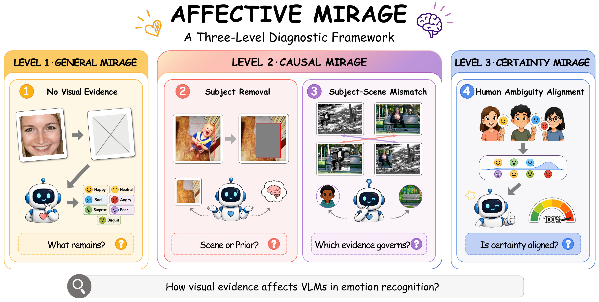
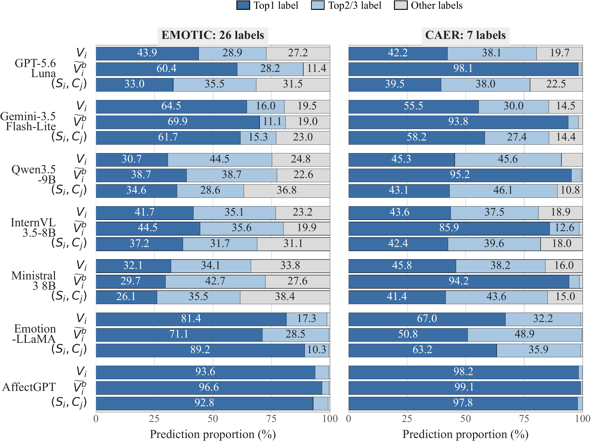
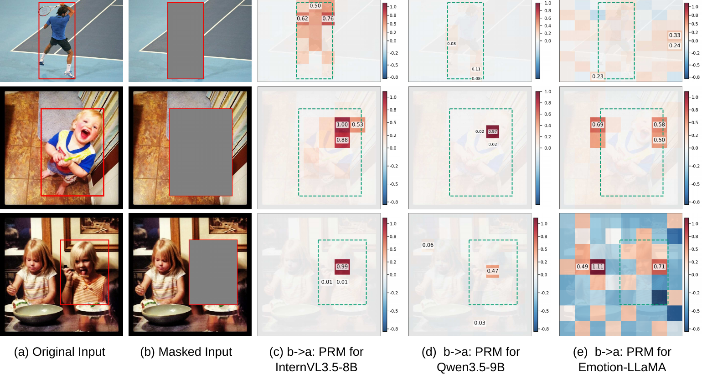
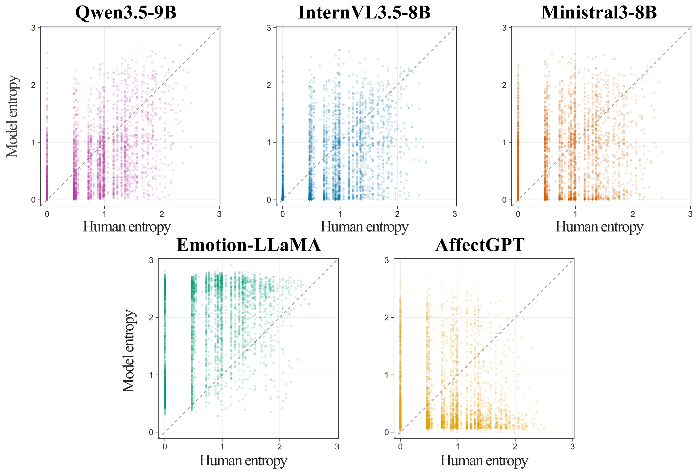

Three-level diagnostic framework.
The paper proposes general, causal, and certainty mirage to examine visual dependence, the causal influence of visual evidence, and uncertainty alignment in visual emotion recognition.
WACV 2027 Submission #2646 | Datasets Track
Affective MIRAGE is a three-level diagnostic framework for visual emotion recognition: it examines visual dependence, the causal influence of subject and scene evidence, and uncertainty alignment with human disagreement.

Vision-language models (VLMs) have shown remarkable visual understanding capabilities, yet recent studies reveal a prevalent MIRAGE phenomenon: models may produce plausible predictions without faithfully relying on the underlying visual evidence. We investigate whether such behavior also exists in the visual emotion recognition task, which is inherently subjective and often relies on subtle and ambiguous visual cues, potentially making the task particularly susceptible to MIRAGE.
Thus, we thoroughly examine open-source, closed-source, and domain-specific VLMs through a novel three-level diagnosis framework, named Affective MIRAGE. First, general mirage removes visual evidence to examine model behavior without reliable visual input. Second, causal mirage uses controlled intervention to examine how different visual evidence causally influences model predictions, together with mechanism-level analysis of visual grounding. Third, certainty mirage examines whether model uncertainty follows human disagreement on ambiguous emotions.
Our findings reveal three characteristic behaviors of current VLMs in emotion recognition: 1) without visual evidence, all evaluated VLMs maintain a nearly 100% mirage rate, while prediction collapse exists toward label priors, 2) the causal dominance of subject evidence is over scene context under counterfactual interventions, and 3) uncertainty alignment with human affective ambiguity is insufficient. To our knowledge, this is the first systematic diagnostic study of MIRAGE behavior in VLM-based visual emotion recognition, identifying limitations beyond benchmark accuracy and offering new insights for future affective VLM evaluation and benchmark design. The code will be available at https://affective-mirage.github.io/Affective_Mirage/.
The paper proposes general, causal, and certainty mirage to examine visual dependence, the causal influence of visual evidence, and uncertainty alignment in visual emotion recognition.
Controlled interventions and mechanism-level analyses uncover prediction collapse, subject evidence dominance over scene context, and partial uncertainty alignment with systematic overconfidence.
The paper shows that benchmark accuracy alone is insufficient and motivates no-vision controls, generality tests for emotion-specialized models, and multi-annotator benchmark design.
D1 | General Mirage
Removes reliable visual evidence with blank, noise, and visual-presence hint inputs to test whether models still assert emotion labels.
D2 | Causal Mirage I
Masks the subject region and measures recognition, F1 degradation, prediction changes, and output concentration.
D3 | Causal Mirage II
Recombines subject and scene evidence across paired samples, then uses CED and restoration maps to read which source drives the output.
D4 | Certainty Mirage
Compares model entropy with human vote disagreement on FER+ to test whether confidence reflects ambiguous emotion evidence.
| Claim in the paper | Main evidence shown on the page |
|---|---|
| MIRAGE-like behavior also appears in visual emotion recognition, but its form differs from conventional visual tasks. | D1 reports near-100% mirage rates under visual absence; Fig. 2 shows prediction concentration under original input, subject removal, and context replacement. |
| Benchmark scores do not fully reveal whether affective predictions use visual evidence. | The main table in the paper compares original inputs with subject removal and subject-scene recombination, while the collapse figure shows how residual scores can coexist with concentrated output distributions. |
| Subject evidence has stronger causal influence than scene context under controlled interventions. | D2 and D3 compare subject removal, scene-context replacement, and subject-region replacement; the case-study PRMs visualize internal restoration patterns for EMOTIC samples. |
| Model uncertainty partially tracks human ambiguity but remains overconfident. | D4 compares model entropy with human vote entropy on FER+; the entropy scatter plot shows the gap between model uncertainty and human disagreement. |
Key Finding 1
Without visual evidence, VLMs maintain a nearly 100% mirage rate in emotion recognition, while their predictions collapse toward a dominant label. Emotion-specific models introduce greater variation in this collapse pattern.
Key Finding 2
VLMs exhibit obvious prediction collapse on emotion prediction tasks. This collapse can be amplified by removing subject-region evidence, though models still achieve nontrivial benchmark scores.
Key Finding 3
General VLMs rely predominantly on subject evidence, with scene context failing to substitute when the subject is removed. Affective VLMs show more model-specific source preferences.
Key Finding 4
Model uncertainty generally increases with human disagreement, but confidence remains systematically too high, indicating only partial alignment with human affective ambiguity.



The submitted study evaluates seven VLMs: GPT-5.6 Luna, Gemini-3.5 Flash-Lite, Qwen3.5-9B, InternVL3.5-8B, Ministral 3 8B, Emotion-LLaMA, and AffectGPT. The diagnoses use RAF-DB for visual absence, EMOTIC and CAER for subject-scene interventions, and FER+ for human-ambiguity analysis.